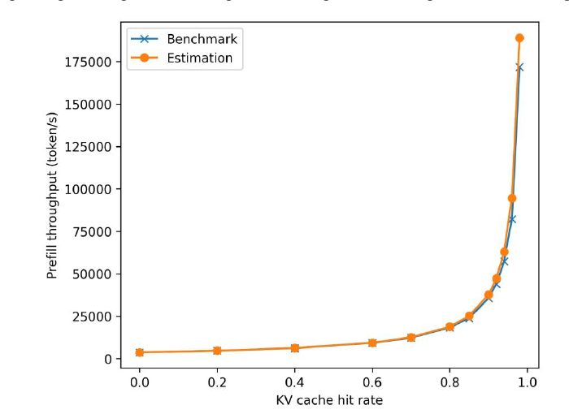
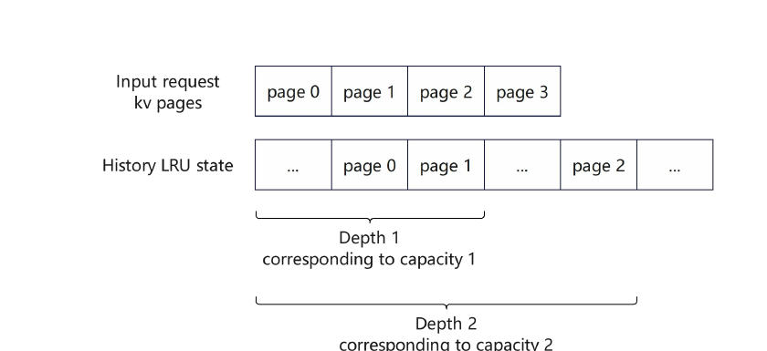
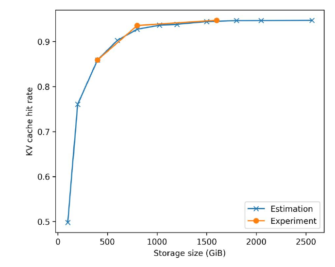
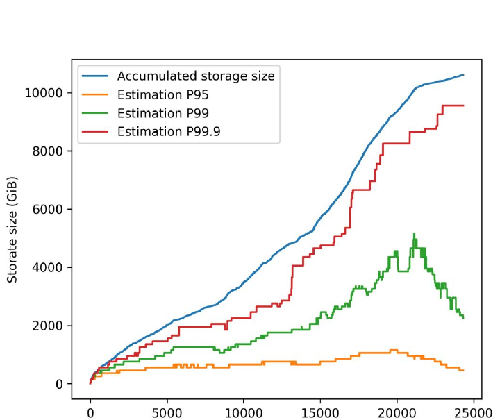

The KV Cache Working Set: Online Capacity Planning for LLM Inference Systems
Agentic 工作負載會一再重用成長中的對話前綴，但「保留所有歷史 KV」不是可負擔的容量規劃。KVSET 把每次 page access 化成 LRU stack distance，利用 Mattson stack 一次回答多個容量的命中率，再用 Fenwick tree 讓這個分析可在線更新。實驗事實在單一內部 coding-agent workload 上，估計曲線與實體部署點視覺上接近，並得到 P95 約 1 TiB、P99 約 5 TiB 的工作集；然而論文未量化 analyzer 自身的時間／記憶體開銷，也未證明這些容量能跨 workload 泛化。
文章目錄
要回答「要多少快取」之前，先分清三個量
這篇論文最容易混淆的不是演算法，而是三種看似相近的「比率」：單頁是否命中、單一請求有多少前綴命中，以及整批請求有多少能保住各自的理論命中率。把它們分開，後面的 P95、P99 才不會被誤讀成 latency percentile。
Prefix cache：省的是重做 prefill
自回歸 LLM 服務會把已處理 token 的 key/value state 留在 KV cache。Agent 的下一輪請求往往包含上一輪的對話與工具輸出；若前綴相同，服務系統便能重用已算好的 KV page，而不是重新跑整段 prefill。這裡的 cache hit rate 是可重用前綴 token／page 的比例，不是請求成功率。Abstract、§1 · PDF p.1
LRU stack distance：不是「多久以前」，而是中間有多少不同 page
Least Recently Used（LRU）會把最近碰過的 page 放在邏輯堆疊頂端。某 page 再次被存取時，其 stack distance 表示自上次存取後，有多少較新的 distinct pages 排在它前面；容量門檻大於這個深度時，它仍在 cache，否則已被逐出。這個順序性質正是 Mattson stack algorithm 能從同一條 reference stream 推導多種 LRU 容量的原因。§2 · PDF p.3
Target hit rate 與 request coverage 是兩個旋鈕
| 量 | 問題 | 本文如何使用 |
|---|---|---|
| 請求內 hit-rate target | 這個 request 的可重用前綴，要保住多少？ | 用所需 prefix pages 的最大 LRU depth 找最小容量。 |
| Request coverage | 整批 requests 中，有多少比例要達到各自的理論命中率？ | Figure 4 的 P95、P99、P99.9；不是 latency 百分位。 |
| Cumulative history | 若歷史上產生的 KV 全不刪，要多少空間？ | 作為過度配置的上界對照，會隨 trace 單調成長。 |
有了這三層概念，真正的問題就變清楚了：容量不足會丟掉昂貴的 prefill reuse，但把歷史全留著又不等於保留「未來真正會再用」的工作集。
為何保留全部歷史 KV 仍不是容量答案？
容量規劃卡在一個兩難：高命中率對吞吐很重要，但每多保留一個 token，就要在所有 transformer layers 保存 KV state；如果用「從開機至今產生多少」當需求，冷資料會把 DRAM／SSD 預算一路推高。
作者主張論文用下式描述忽略 memory-access overhead 時，prefill throughput 與 hit rate 的關係：
其中 \(r\) 是 KV cache hit rate，\(\hat{T}\) 是零命中時的 prefill throughput。例：若其他成本都忽略，\(r=0.9\) 代表只需重算一成前綴，理想吞吐約為零命中的 10 倍。這是動機模型，不是端到端服務的普遍效能定律。§1 · PDF p.2 · Equation 1


最直接的量測方式，是部署很多種實體 cache 容量並重播同一 workload；這太昂貴。較實際的 simulator 方案仍可能為數十個候選容量各維護一個 cache instance，重複做 eviction 與 replay。作者因此導出三個需求：一次處理同時回答多個容量、結果必須對 LRU 精確、以及可跟著 production request stream 在線更新。§1 · PDF p.2–3
分類上，本作屬於 LLM Systems / KV Cache Management：它不改模型、不設計新的 storage fabric，也不直接改 eviction policy；它把既有 LRU prefix cache 的「應配置多少容量」變成可持續估計的系統量測問題。
要消除多個 cache instance，關鍵不是更快地模擬 eviction，而是找出一個能同時回答所有 LRU 容量的充分統計量。
一次 LRU 距離，怎麼同時回答所有容量？
把一個 request 想成依序查詢 page 0、1、2、3。對每個 page，問題不是「在容量 1 的 simulator 裡有沒有」再重問容量 2、3；而是只算一次它在全域 LRU stack 裡的深度，之後拿這個深度與任何容量門檻比較。


形式上，令某次 page access 的 stack distance 為 \(d\)，候選 cache 容量為 \(C\)。論文採用 Mattson stack 性質：當 \(d<C\) 時，此 access 對容量 \(C\) 是 hit；否則是 miss。將同一 request 的各 page 判定加總，就得到該容量下的 request hit rate。§2 · PDF p.3–4 · Figure 2
具體直覺是「先算一次排名，再回答很多門檻查詢」。就像知道跑者的總排名後，可以立刻回答他是否在前 10、前 100、前 1000，不必為每個門檻重跑比賽。類比的邊界在於 LRU 排名會隨每次 access 更新，而非靜態排序；KVSET 因此仍需維護 reference stream 的最新狀態。
「一次距離、多個容量」是這篇論文真正可重用的抽象。它把 capacity sweep 從多套完整系統模擬，改寫成同一組 reuse-distance observations 上的門檻統計。
Mattson stack 解決了「要觀察什麼」；下一步是讓這個距離在長 request stream 上更新得夠便宜，並把 page-level hits 提升成容量規劃答案。
KVSET 如何把請求流轉成容量—命中率曲線？
KVSET 的 end-to-end flow 可以拆成五步：page 化、定位上次 access、計算 stack distance、跨容量累積 hit、再從 hit-rate／coverage 目標反推最小容量。每一步都對應前一章的「不要重播多套 cache」需求。
1. 將 prefix reuse 表示成 KV page reference stream
服務端每收到一個 request，先取得其可重用 prefix 對應的 KV pages。論文的分析單位是 page-granular LRU cache；因此相同 token 數在不同 page layout 或 KV precision 下會換成不同實體容量。評估中給出 FP8 KV 約 60 KB/token，但論文未提供 page size。§2–3 · PDF p.3–4
2. 以最近 access 位置重建 LRU depth
KVSET 記錄每個 page 最近一次出現的位置，並以 Fenwick tree 維護有效位置。當 page 再次出現，tree 會統計在舊位置之後有多少 distinct pages 被更新過；這個數量就是該 page 前方的 LRU stack distance。如此不必顯式搬動一條長 LRU linked list。§2 · PDF p.3
3. 把一個距離廣播給所有候選容量
取得 \(d\) 後，所有 \(C>d\) 的候選容量都可計為 hit，其餘為 miss。對 request 的各 prefix pages 累積後，KVSET 在單次 replay 裡形成整條 capacity-to-hit-rate curve。這一步取代「每個容量各重播一次」的重複工作。§2 · PDF p.4
4. 從 request target 反推最小容量
若某 request 要命中 \(k\) 個 prefix pages，最小容量由這 \(k\) 個 page 所需的最大 LRU depth 決定。這等價於問：要把目標集合中最深的 page 包進 LRU 門檻，容量至少要到哪裡？Figure 2 的小例子顯示，想再多命中 page 2，就必須由 capacity 1 擴到 capacity 2。§2 · PDF p.4 · Figure 2
5. 以 request coverage 將單請求答案轉成 tier sizing
對每個 request 算出所需容量後，系統可追蹤其分布。P95 表示配置該容量時，有 95% requests 能保住各自的 theoretical hit rate；P99／P99.9 則更保守。這讓 operator 能分別替 CPU memory 與 disk tier 選 coverage，而不是用全歷史 KV 總量當唯一答案。§3 · PDF p.5–6 · Figure 4
方法上的「精確」來自 LRU stack 性質；系統上的價值仍要看兩件事：估計是否貼近真實 cache，以及 coverage 曲線能否提供有用、可負擔的容量分界。
10K 與 24K production requests 分別證明了什麼？
論文有兩組 production-trace 實驗：10K requests 用來驗證「預測是否接近實體 cache」，24K requests 用來展示「容量需求如何隨 stream 與 coverage 變化」。兩者回答不同問題，不能合併成一個泛化結論。
Claim-test 1：估計曲線能否重現部署量測？
設定與控制。作者使用 10,000 個內部 production coding-agent requests。實體側以 Mooncake 配置多個 KV cache pools，serving engine 為 SGLang；硬體為 NVIDIA H20，模型為 GLM-5.2 W4A8，MTP 關閉，KV cache 為 FP8，約 60 KB/token。§3 · PDF p.4
實驗事實Figure 3 的 Estimation 曲線與少數 Experiment points 在各量測容量上視覺接近；約從 100 GiB／0.50 hit rate 快速上升，之後在約 0.94–0.95 一帶趨平。這支持 KVSET 能重建此 trace 的 capacity-to-hit-rate 形狀，也顯示進入平台區後，多買容量的邊際命中改善很小。§3 · PDF p.4–5 · Figure 3


限制。論文只說「closely match」，沒有數值 error metric、重複次數或變異；實體量測也只涵蓋少數容量。它證明的是此設定下的相符度，不是所有模型／cache implementation 的普遍精度。
Claim-test 2：coverage 是否比累積歷史量更能指導配置？
設定與控制。作者追蹤一段 24,000 requests 的內部 coding-agent service trace，並比較保留全歷史 KV 的 Accumulated curve，與保住 95%、99%、99.9% requests 理論命中率所需的 estimated capacity。論文未說明這 24K 與上一實驗的 10K 是否來自同一 trace。§3 · PDF p.5–6
實驗事實全歷史容量一路增至約 10.8 TiB；P99.9 在觀察窗口內仍明顯成長，未見收斂。稍微放寬 coverage 後，P99 約需 5 TiB，P95 約需 1 TiB；約 21,000 requests 後 P95/P99 下降，作者把原因歸於 concurrently active users 減少。§3 · PDF p.6 · Figure 4


作者主張作者據此舉例：CPU-memory tier 可按 P95 配約 1 TiB，disk tier 按 P99 配約 5 TiB。這是由 trace 推出的 sizing recommendation；論文沒有實際部署這個兩層配置並量測 TTFT、throughput、tier-hit latency 或成本。§3 · PDF p.6
Claim-test 3：論文證明了「online overhead 很低」嗎？
作者主張摘要與貢獻列表主張 KVSET 大幅降低 compute／memory overhead，使 real-time analysis 可行。Abstract、§1 · PDF p.1–3
分析論文的演算法結構確實移除了「每容量一套 cache」的重複狀態，但實驗沒有報 analyzer 的 CPU time、memory footprint、每 request update latency、stream lag，也沒有與 kvcache-simulator 的 runtime／memory 做定量比較。因此，估計準確度有部署證據，低 overhead 則仍主要是機制推論與作者主張。
證據最強的是「同一 workload 上的曲線相符」與「coverage 對容量非常敏感」；接下來要守住的邊界，是別把 LRU 的演算法精確性擴張成完整 production system 已被充分驗證。
精確的 LRU 推導，還缺哪些系統證據？
KVSET 的優點是把一個昂貴但重要的 operations question，還原成成熟的 cache-stack 問題；它的主要風險則是論文把「演算法上可少維護狀態」與「production 上足夠便宜」放得太近，中間缺了一組 overhead experiments。
值得肯定的部分
- 問題定義可操作：輸出不是抽象的 reuse score，而是 operator 可拿去做 DRAM／SSD tier sizing 的容量—命中率與 coverage 曲線。
- 使用實體部署校準：Figure 3 並非只拿估計器對另一個 simulator，而是與 Mooncake／SGLang 的物理容量量測點比對。
- 把 target 分層：Figure 4 讓 95%、99%、99.9% coverage 的成本差距可見，避免把「保留所有歷史」誤當唯一安全答案。
證據沒有跨過的界線
| 議題 | 論文已有 | 仍缺 |
|---|---|---|
| 估計準確度 | 單一 coding-agent workload 的曲線與部署點視覺接近。 | 數值誤差、重複量測、不同 arrival pattern、第二個 service／模型。 |
| 在線成本 | Mattson stack + Fenwick tree 的機制說明。 | CPU、RAM、每 request latency、update throughput、與多 simulator baseline 比較。 |
| 端到端效益 | Equation 1 與 hit-rate curve 說明動機。 | 配置後的 TTFT、throughput、storage I/O、tier transfer cost 與總擁有成本。 |
| 策略範圍 | page-granular LRU、full-attention KV。 | LFU／cost-aware／admission policies、variable-size objects、hybrid Mamba／SWA state。 |
分析Figure 1 的 \(\hat{T}/(1-r)\) 在高 hit-rate 區域會發散，正好能凸顯「最後幾個百分點」的動機；但真實系統必有 lookup、資料搬移、decode、排程與 storage latency 下限。若直接把 99% 到 99.9% 的 hit-rate 改善換算成此式的吞吐收益，會高估價值。
分析Figure 4 在 active users 減少時會下降，說明工作集不是固定硬體常數，而是 workload state。Production sizing 若只取整段 trace 的單一峰值，可能過度配置；若只取短視窗，則可能對突發 reuse pattern 反應太慢。論文沒有討論 windowing、drift detection 或安全餘裕。
作者主張作者明確限制 KVSET 目前只估 full-attention component，且只適用 LRU；hybrid architecture 的 Mamba／sliding-window states 需另外按模型與 workload 保留比例。§5 · PDF p.7–8
因此最有價值的下一步，不是再畫一條更密的容量曲線，而是把 estimator 放進可觀察、可回退的 provisioning loop，證明它在 drift、tier latency 與政策改變下仍值得信任。
如何把容量估計器變成可部署的控制迴路？
KVSET 已提供 measurement primitive；要進入 production controller，還要把估計誤差、分析成本、配置動作與回退條件一起設計，而不是只輸出一個 TiB 數字。
四個優先實驗
- 分析Accuracy–overhead Pareto：同時報 capacity error、CPU cores、RAM、每秒可處理 pages 與 p99 update latency，並與獨立多容量 replay 比較。
- 推測Drift-aware windows：用 sliding window、decay 或 change-point detection 對 active-user 變動，測量縮容速度與 cache-miss burst 的風險。
- 推測多 tier 共同最佳化：把 CPU DRAM、local SSD、remote storage 的 latency／bandwidth／price 納入，而非先選 coverage 再靜態映射容量。
- 分析跨 workload 外部效度：至少加入 customer-support、deep-research、multi-agent 與一般 chat traces，分解 tenant skew、session length、prefix fan-out 對 working set 的影響。
研究小組討論題
- P99 coverage 真正應最佳化的是「requests 達到 theoretical hit rate」，還是「節省的 prefill FLOPs／TTFT」？長請求與短請求等權合理嗎？
- 若 cache admission policy 先拒絕低價值 pages，Mattson stack 的 exactness 還能保留多少？需要何種 generalized reuse-distance statistic？
- Figure 4 的峰值應用固定 headroom、季節性模型，或風險限制最佳化來轉成採購容量？
- 當 remote tier transfer 比重算 prefill 更慢時，「命中」是否仍應算成功，還是必須改用 benefit-weighted hit？
- 若不同 tenant 的 prefixes 不可共享，應集中估計全域 working set，還是為每個 isolation domain 分開配置？
最自然的系統化延伸，是讓 KVSET 輸出帶誤差與時間尺度的 capacity recommendation，再由 controller 在成本上限、miss-rate SLO 與最小 resize interval 下決定擴縮；這會把論文由 analyzer 推進成真正的 cache autoscaler。
來源、術語與關鍵證據定位
論文資訊
- 正式標題
- The KV Cache Working Set: Online Capacity Planning for LLM Inference Systems
- 作者
- Luchang Li、Shuaishuai Wang、Zhao Ruan、Dongfang Li、Bozhao Gong
- 機構
- Kingsoft Cloud
- 版本
- arXiv:2609.27746v1 [cs.DC]，submitted 2026-09-23
- 篇幅
- 共 9 頁
- 分類理由
- 分析主要貢獻是 LRU KV prefix cache 的在線 working-set／capacity analysis，因此歸入 LLM Systems / KV Cache Management。
- 程式碼
- kv_cache_capacity_estimator ↗（論文提供；本次未獨立稽核程式碼）
術語表
- Prefix cache
- 跨請求重用相同前綴的 KV states，以避免重做 prefill。
- Working set
- 在指定 hit-rate／coverage 目標下，真正需要保留的最小 cache capacity；不是所有歷史 KV 的總量。
- Stack distance
- 某 page 自上次 access 後，排在它前方的較新 distinct pages 數；LRU 下可直接決定容量門檻。
- Mattson stack
- 由單一 reference stream 推導不同 LRU cache capacities hit／miss 行為的分析方法。
- Fenwick tree
- KVSET 用來維護 access positions 並計算 stack distance 的累積計數資料結構。
- Theoretical hit rate
- 容量無限時，某 request 依其可重用前綴能達到的命中率。
- Request coverage
- 能保住各自 theoretical hit rate 的 requests 比例；Figure 4 的 P95/P99/P99.9。
關鍵證據索引
- 命中率與理想 prefill throughput：§1，PDF p.2，Figure 1、Equation 1；明確忽略 memory-access overhead。
- Mattson stack 與 Fenwick tree：§2，PDF p.3–4，Figure 2；由 page depth 回答多容量 hit/miss。
- 估計對實體部署：§3，PDF p.4–5，Figure 3；10K production coding-agent requests。
- 在線容量與 coverage：§3，PDF p.5–6，Figure 4；24K requests，P95 約 1 TiB、P99 約 5 TiB。
- 適用邊界：§5，PDF p.7–8；目前限 LRU 與 full-attention KV component。